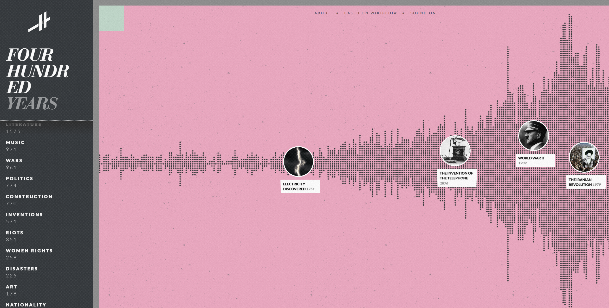
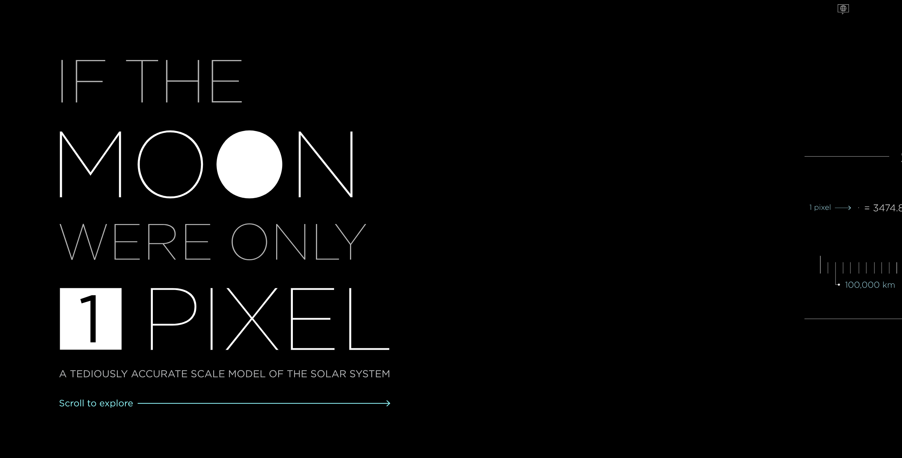

Histography.io -- Four Hundred Years

Histography maps Wikipedia events as small dots along a simple backdrop, allowing users to click into them with interesting animations as well. The UI is clean and playful, and the overall style as well as the interactivity along a timeline aligns with what I want to do with my project. The experience as a whole is very instruction-free and allows the user to explore and discover small details on their own.
If the Moon Were Only 1 Pixel

If the Moon Were Only 1 Pixel is rather self-explanatory in theme, but its implementation is not only unique but similar to my concept as well. It is a scrollable timeline-esque structure along which information is displayed in interesting and occasionally interactive ways, with the design remaining simple with bold graphic elements. Users can scroll back and forth and see comparisons in size, and I want to do something similar albeit with time.